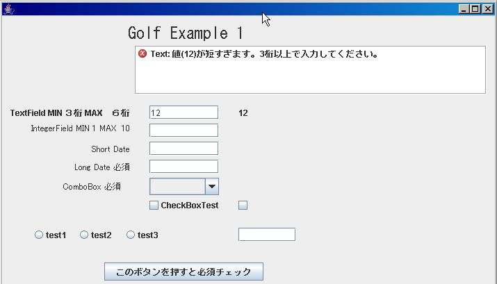
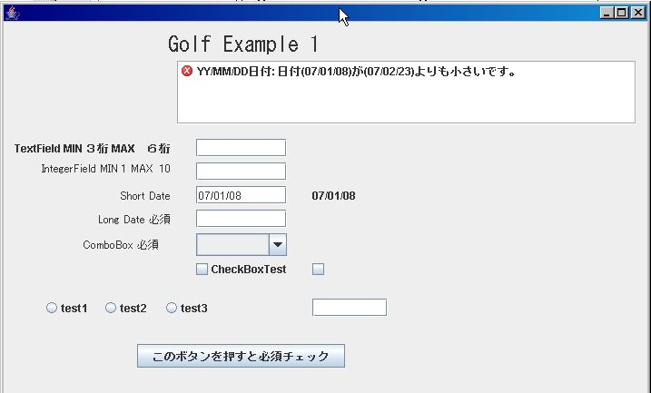
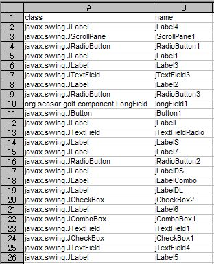

-
- それでは、Sampleを見ていきましょう。まず最初に、下記のLauncher画面が表示されます
- このボタンをおすと、Exampleが走ります。そのProgramのボタンを押したActionは下記の様になっています。
private void jButton1ActionPerformed(java.awt.event.ActionEvent evt) {
launchFrame("example1Frame");
}
private void launchFrame(String frameName) {
GolfFormInterface jFrameT = FormManagerUtil.getFrame(frameName);
jFrameT.initBinding(null);
((JFrame)jFrameT).validate();
((JFrame)jFrameT).pack();
((JFrame)jFrameT).setVisible(true);
}
- 上記は、ｊButton1の場合ですが、２から４もほとんど同じです。
FormManagerUtil.getFrame(frameName);で、S2Containerに自動登録されている、｢"example1Frame"」を
生成して、その「initBinding();」 Methodを呼んでいます。
Golf Frameworkでは、「 GolfFormInterface」をFrame ClassにImplementsする事により、統一的に
イニシャライズが出来ます。
- それでは、Example １を見ていきましょう。画面は下記の様に表示されます。
- それでは、一番上のText Fieldに「１２」と入力して、「TAB」か、他のFieldをクリックして
入力を完了して見ましょう。下記の様に、ERRORが即座に表示されます。
（このFieldは ３桁から６桁の文字列を入力する、チェックが掛かっていいます。）
また、カーソル（Focus)も自動的に最初のエラー 項目に設定される様になっていますので、
直ぐ修正が出来ます。

- それでは、この入力「１２３」として、エラーを解除し、つぎの整数項目に行きます。
試しに、ここで「A」とか「B」を入力してみて下さい。この項目は、JTextFieldを拡張した
「org.seasar.golf.component.IntegerField」ですので、整数しか受け付けません。
それでは、「１２」と入力して見ましょう。下記の様にエラーになります。

- それでは、これも「５」と正常入力して、つぎの Short Date項目に行きます。
ここは、「YY/MM/DD」項目です。ためしに、「平成１８年１月１０日」といれてみます。
- それでは、「07/5/10」と修正して見ましょう。（本日より未来の日を入れて下さい）
- >即座に、表示が「07/05/10」に変わりました。自動的にFormatされます。
「2007/1/10」といれても、同じになります。
それでは「07/1/8」と入れてみましょう。
下記の様にERRORになります。このFieldは、前日以降のみ受け付けます。

- それでは、「07/5/10」など未来日を入力して、エラーを消して、次のLong Dateに行きます。
ここは、「YYYY/MM/DD」項目です。好きな年月日をいれて下さい。
入力後、下の「このボタンを押すと・・・・」を押してみて下さい。下記の画面になります。
-
エラーが表示されましたね。この画面では、「Short Date」以外が必須項目となっていますので、
未入力だとエラーになります。実際には、HOSTにSUBMITする、「ENTER」ボタンにこの必須チェック
（必須チェックだけでなく、複数の入力項目の相関 Checkなども可能）機能を実際にHOSTに
送る前に行い、「エラー」の場合は即座に中止し、「警告」であれば ダイアログなどで確認
の後、送るのが良いと思います。
それでは、この画面のProgramを見ましょう。（Matisseで自動作成分を除く）
public class Example1Frame extends javax.swing.JFrame implements GolfFormInterface {
private FormManager formManager = null;
public void initBinding(HashMap params) {
formManager = new FormManager(this);
formManager.init();
formManager.createReportList(jScrollPane1);
formManager.setValidationFromCsvResource("Example1_bind.csv");
formManager.setBindFromCsvResource("Example1_bind2.csv");
((SelectionInList )formManager.getFormBindingManager()
.getValueModel("jComboBox1")).setListModel(
new javax.swing.DefaultComboBoxModel(new String[]
{"", "Item 11", "Item 22", "Item 33", "Item 44" }));
}
private void jButton1ActionPerformed(java.awt.event.ActionEvent evt) {
formManager.getFormValidationManager().Validate(true);
}
public FormManager getFormManager() {
return formManager;
}
public JMenuBar getMenu() {
return null;
}
public JPanel getContentPanel() {
return null;
}
public void processAction(HashMap params) {
}
public void setFormManger(FormManager formManager) {
this.formManager = formManager;
}
- 「赤」の部分のみが、手で入力しなければならない項目で、大変すくなくなっています。
また「青」の部分は、GolfInterfaceをImplementsすれば、Netbeansが自動的に作成します。
なお、Interfaceでこの画面では、不必要でnullのみ返している項目が多くありますが、
これは、Example ４を見て頂ければ、理由が分かると思います。
それでは、「Validator」の設定を行う、CSV Fileの内容を見てみましょう。
formManager.setValidationFromCsvResource("example1_bind.csv");
[example1_bind.csv]
Ver 0.1.1 対応 BindingはDefaultでは Focus Lost時に行われ、そのタイミングでValidationされますが、もしファンクション・キー
対応などで、即座にBindingしたい場合は、「Immed」という列を追加し、そこに「T」を入力すると、即座にBindingされます
一番左の項目は、参考ですので、入力しなくても構いません。
golfを「Debug」MODE（golf.propetiesで設定）動かすと、自動的に下記のような、JComponentの
Classと変数名のCSVが作成されますので、これから簡単にコピペ出来ます。
[org.seasar.golf.example.frame.Example1Frame.csv]

- Validatorの設定のDicon Fileは、下記の様になっています。
S2Containerを使って簡単にValidatorのParameterをSet
出来るのが判ると思います。
[golfValidator.dicon]
xml version="1.0" encoding="Shift_JIS"
<!DOCTYPE components PUBLIC "-//SEASAR2.1//DTD S2Container//EN"
"http://www.seasar.org/dtd/components21.dtd">
<components>
<component name="min3max6string" class="org.seasar.golf.validator.StringValidator">
<property name="minLength">new Integer(3)</property>
<property name="maxLength">new Integer(6)</property>
</component>
<component name="min1max10long" class="org.seasar.golf.validator.LongValidator">
<property name="minValue">new Integer(1)</property>
<property name="maxValue">new Integer(10)</property>
</component>
<component name="long" class="org.seasar.golf.validator.LongValidator">
</component>
<component name="requiredValidator" class="org.seasar.golf.validator.RequiredValidator">
</component>
<component name="shortDateValidator" class="org.seasar.golf.validator.DateValidator">
</component>
<component name="shortDateValidatorMax1" class="org.seasar.golf.validator.DateValidator">
<property name="maxRelativeDate">new Integer(1)</property>
</component>
<component name="shortDateValidatorMin1" class="org.seasar.golf.validator.DateValidator">
<property name="minRelativeDate">new Integer(-1)</property>
</component>
<component name="longDateValidator" class="org.seasar.golf.validator.DateValidator">
<property name="displayFormat">"L"</property>
</component>
<component name="doubleValidator" class="org.seasar.golf.validator.DoubleValidator">
</component>
</components>
- ここで、入力フィールド、Vlaue Modelの関係を見てみましょう。
CSVの設定で、入力フィールドは、Vlaue Model（Value HolderとJGoodeisのBindingでは呼んでいます）とが
Bindingされていますので、入力フィールドにデータをいれて、Focusがなくなった時点でその内容が
Vlaue ModelにSetされます。またこのBindingは双方向ですので、Vlaue ModelにプログラムでDataを
入力すると、即座に入力フィールドに反映されます。
- また今回はBindingの状況がすぐ画面で確認できるように、Value ModelとJLabelフィールドもBinding
しています。この設定も下記のCSVで簡単に出来ます。
formManager.setBindFromCsvResource("example1_bind2.csv");
[example1_bind.csv]
プログラムから、フィールドにDataをSet、Getする場合は、以下の様にでValue Modelに対して行ってください。
formManager.setValue(name, value);
formManager.getValue(name)
それでは、次のExampleで、Tableの機能を見てみましょう。
またValidatorの詳しい説明もあります。
- Example ２へのリンク
- Validatorの説明へのリンク
- GOLF HOMEへのリンク
|